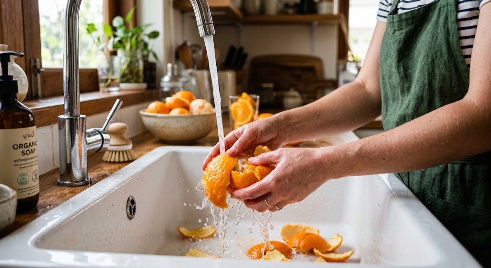
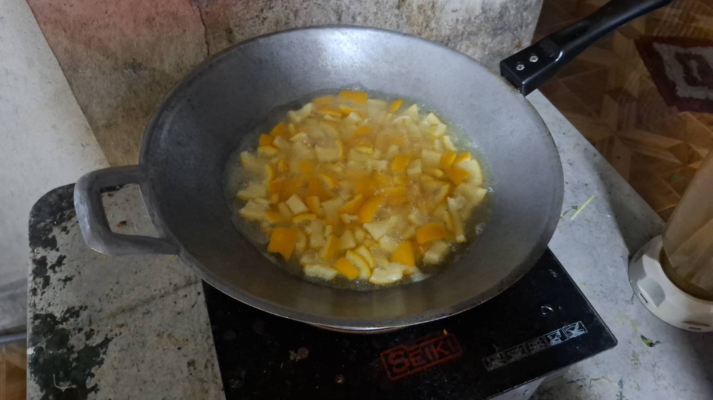
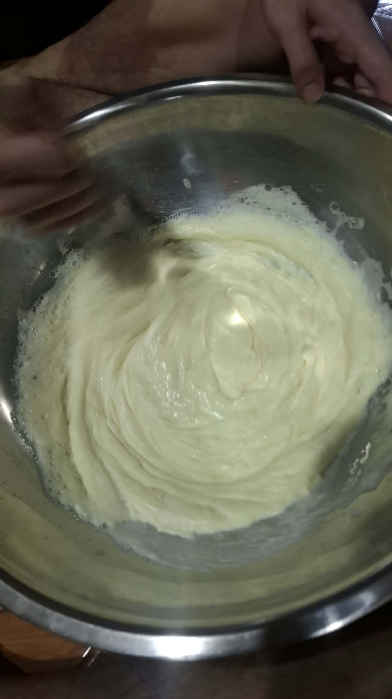
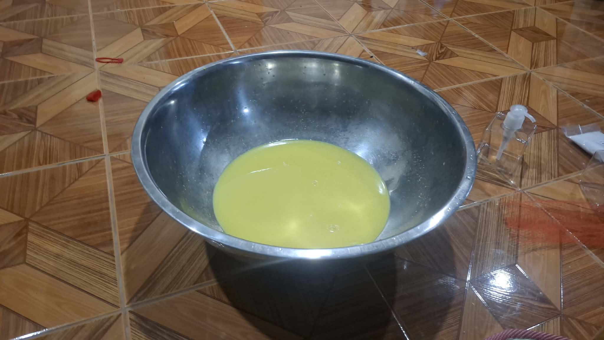
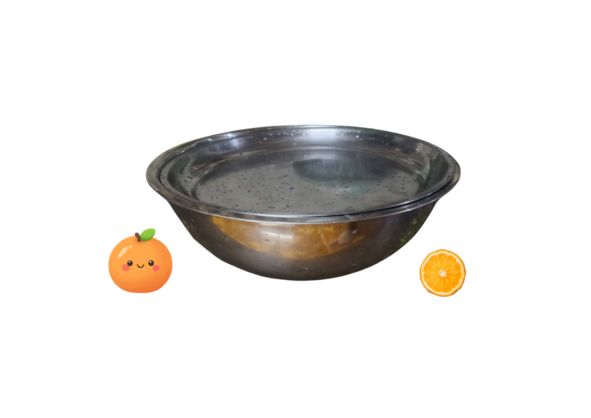

กระบวนการผลิตสบู่เหลวเปลือกส้มอย่างละเอียด
ผสานภูมิปัญญาท้องถิ่นเข้ากับวิทยาศาสตร์การสกัดสารบริสุทธิ์ ทุกขั้นตอนผ่านการควบคุมคุณภาพ ปลอดเคมีอันตราย และย่อยสลายได้ 100%
ภาพรวมขั้นตอนกระบวนการผลิตแบบหมุนเวียน
(Closed-Loop Process)
ล้าง & เตรียม
คัดสรรส้มสด ขจัดสารตกค้างด้วยน้ำเกลือ
ต้มสกัดสาร
สกัด Limonene & Vit C ที่ 80-90°C
กวนเบสหัวเชื้อ
ผสม N70 กับผงข้น กวนวนทางเดียวกัน
ผสมสารบำรุง
เติมน้ำสกัดส้ม + กลีเซอรีนเพิ่มความชุ่มชื้น
พักสบู่ & ตรวจ pH
พักทิ้งไว้ 24 ชม. ตรวจ pH 5.5 ก่อนบรรจุ

ขจัดสิ่งปนเปื้อนและคัดสรรวัตถุดิบคุณภาพ
เริ่มต้นจากการคัดเลือกเปลือกส้มสดไร้รอยเน่าเสียจากกลุ่มเกษตรกรท้องถิ่น นำมาล้างทำความสะอาดด้วย (น้ำเกลือ) เป็นเวลา 15 นาที เพื่อขจัดคราบสิ่งสกปรกและยากำจัดศัตรูพืชที่ติดอยู่บนผิวเปลือกส้มออกให้หมด จากนั้นล้างด้วยน้ำสะอาดสะพัดให้แห้งสะเด็ดน้ำ
ดึงสาร d-Limonene (ต้มเปลือกส้ม)
หั่นเปลือกส้มเป็นชิ้นเล็กๆ แล้วนำไปต้มกับน้ำสะอาดต้มสุกที่อุณหภูมิควบคุม (80 - 90 องศาเซลเซียส) เป็นเวลา 30-45 นาที เพื่อให้ความร้อนดึงสารสำคัญอย่าง (d-Limonene) และ (Vitamin C) ออกมาสู่น้ำต้ม และนำมากรองด้วยผ้าขาวบางและ ได้น้ำต้มเปลือกส้มสีเหลือง


ผสมหัวเชื้อ N70 เข้ากับผงข้นบริสุทธิ์
ตักหัวเชื้อ N70 ปริมาณ 250 g ใส่ลงในภาชนะผสม จากนั้นทยอยใส่ผงข้น 50 g ลงไปอย่างช้าๆ ใช้ไม้พายกวนผสมวนไปใน (ทิศทางเดียวกันเท่านั้น) จนกระทั่งเนื้อหัวเชื้อเริ่มเปลี่ยนเป็นสีขาวข้นเนียน
เติมน้ำสกัดเปลือกส้มและกลีเซอรีนพืช
เทน้ำสกัดเปลือกส้มที่เย็นแล้วปริมาณ 500 g ค่อยๆ ใส่ลงในภาชนะผสมทีละน้อย พร้อมกวนอย่างเบามือ จากนั้นเติมกลีเซอรีนพืช 30 g, ผงฟอง 20 g และน้ำสะอาดต้มสุกส่วนที่เหลือ 150 g กวนต่อจนส่วนผสมทั้งหมดละลายเข้ากันดี


พักให้สบู่ใส ตรวจวัดค่า pH 5.5 ก่อนบรรจุ
ปิดฝาภาชนะผสมให้มิดชิด พักทิ้งไว้ประมาณ 12 - 24 ชั่วโมง เพื่อให้ฟองอากาศยุบตัวจนหมด เนื้อสบู่จะกลายเป็นสีส้มอำพันใส สุ่มทดสอบค่า pH ให้ได้ช่วงสมดุลผิว 5.5 ก่อนนำไปบรรจุลงในขวดปั๊มเพื่อใช้งาน
ต้องการดูสูตรคำนวณสัดส่วนวัตถุดิบเพื่อทำใช้เอง?
เปิดดูคู่มือขั้นตอนการทำและอัตราส่วนระบุหน่วยกรัม (g) อย่างละเอียดได้ที่นี่
เปิดดูคู่มือการทำแบบละเอียด →